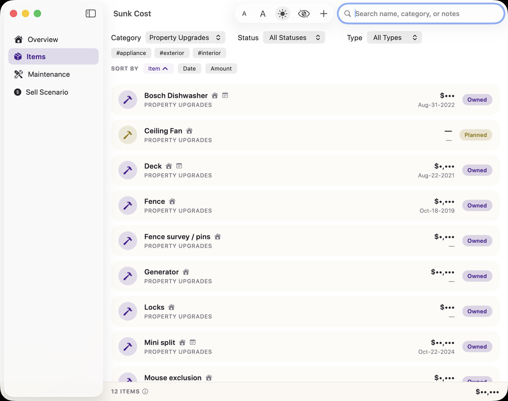
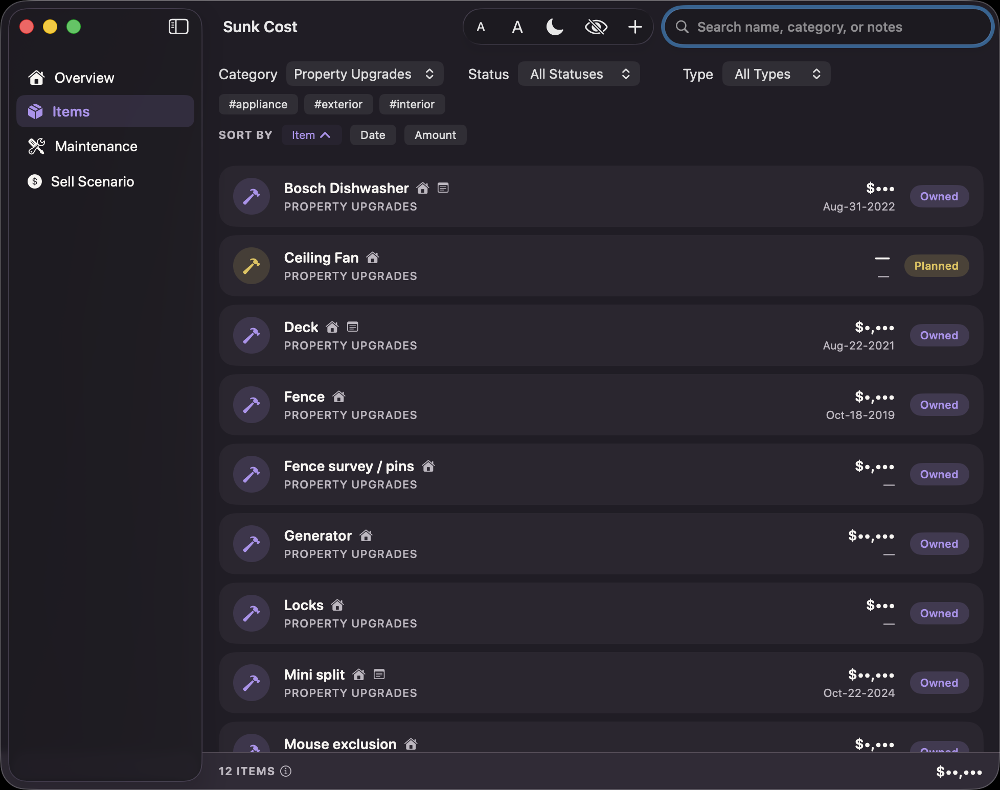
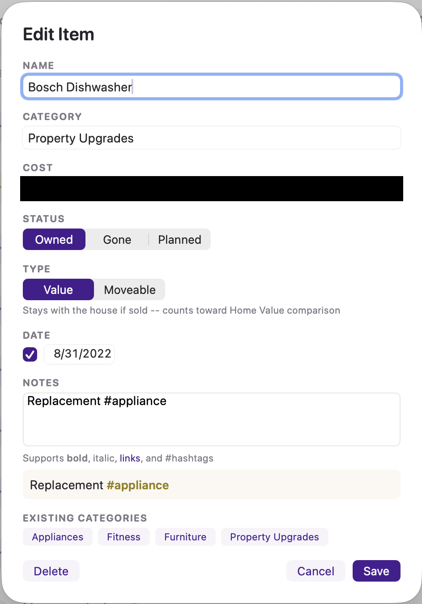

📦 Items
Every one-time thing you've bought (or plan to) for the house — furniture, appliances, a new deck, a fence. Not the recurring bills; that's Maintenance.


Adding and editing an item
Click the + button to add one, or click any item's name to edit it.

- Name — whatever you'd call it
- Category — free text. Type a new one or reuse an existing one; the app suggests categories you've used before as you type.
- Cost — optional. Leave it blank if you don't know yet (Planned items especially).
- Status — Owned, Planned, or Gone (see below)
- Type — Value or Moveable (see below)
- Date — optional, when you bought it
- Notes — free text. Supports bold, italic, links, and #hashtags — type a live preview shows up right under the box as you type.
Status: Owned, Planned, or Gone
- Owned — you have it, it's in the house right now
- Planned — you're thinking about it, haven't bought it yet. Doesn't count toward your spending total until you switch it to Owned.
- Gone — you no longer have it. Picking Gone asks how: Sold (with what you got for it, if anything), Given Away, Trashed, or Other. It still counts in your all-time spending total, since the money is genuinely gone either way.
Type: Value or Moveable
This one matters for your Sell Scenario numbers:
- Value — stays with the house if you sell it (a new roof, built-in cabinets, a fence). Counts toward the house's overall value comparison.
- Moveable — goes with you when you move (a couch, a TV). It cost you money, but it isn't part of what makes the house itself worth more.
Filtering, sorting, and hashtags
Above the list: dropdowns to filter by Category, Status, and Type, plus clickable hashtag chips pulled from whatever you've typed in Notes fields — click one to instantly filter to just items tagged with it. Click any column header (Item / Date / Amount) to sort by it; click again to flip the direction.
Clicking directly on a Status badge in the list (Owned/Planned/Gone) is a shortcut that filters the whole list to just that status — click it again to clear the filter.